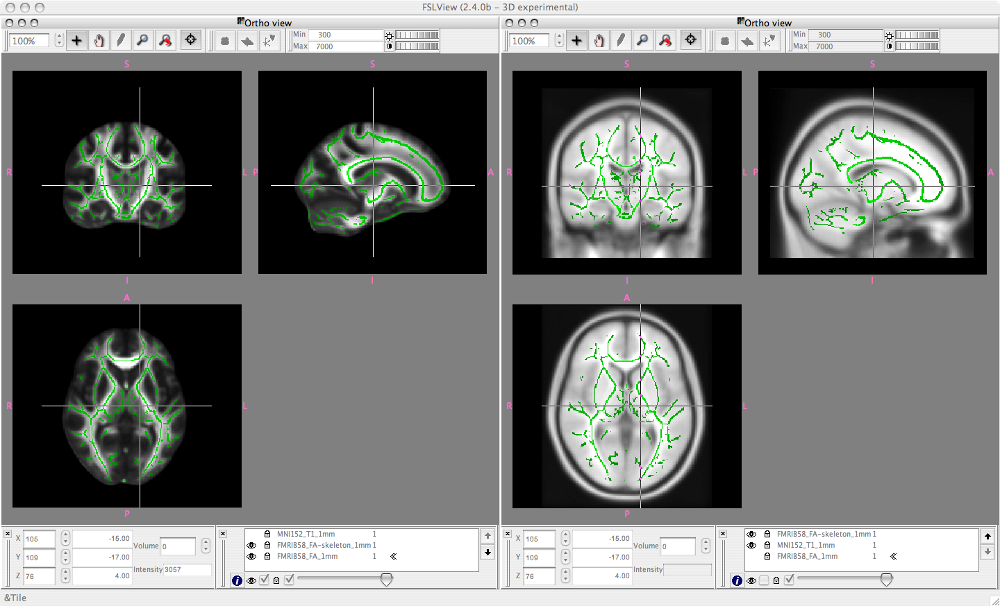

FMRIB58_FA standard space image
The FMRIB58_FA is a high-resolution average of 58 well-aligned good
quality FA images from healthy male and female subjects aged between
20-50. The original DTI resolution was approximately 2x2x2mm.
The FMRIB58_FA_1mm image is in the same space as the MNI152
standard space image, at 1x1x1mm resolution. It was created by
iteratively registering the raw FA images. First all raw images were
affine-aligned to the MNI152 using FLIRT. The mean of these aligned
images was then taken and all raw FA images were then aligned to this
mean, using the IRTK nonlinear registration software. The mean was
recreated and the nonlinear registration repeated. Again, the mean was
taken, and the nonlinear registration repeated a final time, this time
with slightly higher amount of warping allowed. The final mean FA
image is scaled by a factor of 10000 from the original theoretical
range of 0:1.
The FMRIB58_FA-skeleton_1mm image is derived from the
FMRIB58_FA_1mm by standard TBSS skeletonisation, followed by
thresholding at 2000 (i.e., FA=0.2).
Below: FSLView snapshots. Left: the FMRIB58_FA_1mm mean FA image
underneath the derived mean FA skeleton
FMRIB58_FA-skeleton_1mm. Right: the same skeleton overlaid onto the
MNI152 standard space image sampled at 1mm resolution.
